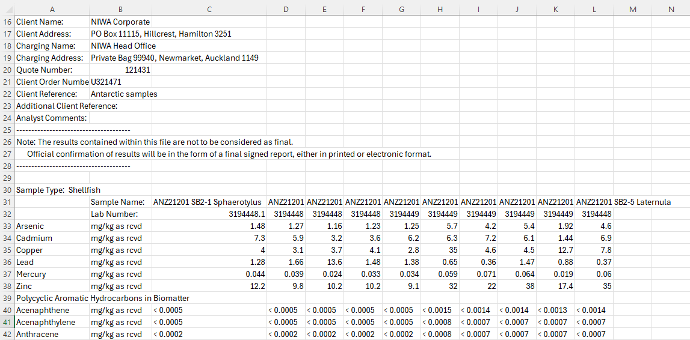
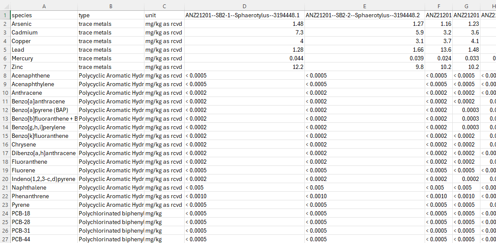

Tabular Data#
This tutorial processes contaminant concentrations measured in Antarctic marine tissue samples from the Scott Base area. The raw data arrives as a wide-format lab export — contaminants as rows, samples as columns — and is reshaped into three tidy, FAIR-ready CSVs: one per contaminant class.
Donwload raw lab file
raw_lab_chemical_data_example.csv
Donwload transformed raw lab file
transformed_chemical_data_example.csv
Download curated files
trace_metals_in_biomatter.csv
polycyclic_aromatic_hydrocarbons_in_biomatter.csv
polychlorinated_biphenyls_in_biomatter.csv
Script
Dependencies:
library(tidyverse) # dplyr, tidyr, stringr, purrr
import pandas as pd
import re
from datetime import datetime, timezone
Step 1: Transform Raw Lab Data#
The raw laboratory CSV (raw_lab_chemical_data_example.csv) uses a wide format with metadata in the header: each row is a contaminant and each column (after the first three) is a sample. Sample column names encode the expedition, station-replicate, tissue species, and sample ID, separated by --. Before running the script, this file is manually reshaped into a tidy format (transformed_chemical_data_example.csv) where each sample is a row.

⬇ manually reshaped to tidy format ⬇

Step 2: Read and Reshape#
The data is transposed from wide format into tidy format/long format: each row becomes one measurement (one contaminant in one sample). Contaminant names then become column headers, and samples become rows. Finally the data is split into three separate DataFrames — one per contaminant class.
After reshape — each row is now a sample, each contaminant is a column (trace metals subset shown):
type |
unit |
name |
Arsenic |
Cadmium |
Copper |
Lead |
Mercury |
Zinc |
|---|---|---|---|---|---|---|---|---|
trace metals |
mg/kg as rcvd |
ANZ21201–SB2-1–Sphaerotylus–… |
1.48 |
7.30 |
4.0 |
1.28 |
0.044 |
12.2 |
trace metals |
mg/kg as rcvd |
ANZ21201–SB2-2–Sphaerotylus–… |
1.27 |
5.90 |
3.1 |
1.66 |
0.039 |
9.8 |
trace metals |
mg/kg as rcvd |
ANZ21201–SB2-1–Laternula–… |
5.70 |
6.30 |
35.0 |
0.65 |
0.059 |
32.0 |
ds_tissue <- read.csv("transformed_chemical_data_example.csv", check.names = FALSE) %>%
# Wide → long: each row is one contaminant × one sample
pivot_longer(., -c("species", "type", "unit")) %>%
# Long → wide: contaminants become columns, samples become rows
pivot_wider(., names_from = "species", values_from = "value") %>%
# Split into a named list by contaminant class
split(., factor(.$type, levels = unique(.$type))) %>%
# Drop columns that are entirely NA within each class
map(~ select(.x, where(~ !all(is.na(.)))))
df = pd.read_csv("transformed_chemical_data_example.csv")
# Wide → long (pivot_longer equivalent)
df_long = df.melt(
id_vars=["species", "type", "unit"],
var_name="name",
value_name="value"
)
# Long → wide: contaminants (species) become columns, samples become rows
df_wide = (
df_long
.pivot_table(
index=["type", "unit", "name"],
columns="species",
values="value",
aggfunc="first"
)
.reset_index()
)
df_wide.columns.name = None
# Split by contaminant class; drop all-NA columns within each group
groups = {
t: df_wide[df_wide["type"] == t].dropna(axis=1, how="all").copy()
for t in df_wide["type"].unique()
}
Step 3: Create Sample IDs#
The sample column name encodes four fields joined by --:
ANZ21201 -- SB2-1 -- Sphaerotylus -- 3194448.1
expedition station-rep tissue species sample ID
A concise id column is built from the station-replicate and tissue species, and the original verbose name is dropped. The sample name is decoded into a readable id and measurement columns carry units:
id |
Arsenic [mg/kg] |
Cadmium [mg/kg] |
Copper [mg/kg] |
… |
|---|---|---|---|---|
SB2-1-Sphaerotylus |
1.48 |
7.30 |
4.0 |
… |
SB2-2-Sphaerotylus |
1.27 |
5.90 |
3.1 |
… |
SB2-1-Laternula |
5.70 |
6.30 |
35.0 |
… |
ds_tissue <- ds_tissue %>%
map(~ .x %>%
rowwise() %>%
mutate(
id = paste0(
str_split(name, "--")[[1]][2], # station-rep e.g. "SB2-1"
"-",
str_split(name, "--")[[1]][3] # tissue e.g. "Sphaerotylus"
)
) %>%
ungroup() %>%
select(-name, -unit, -type) %>%
rename_with(~ paste0(.x, " [mg/kg]"), -id) %>% # add units
select(id, everything())
)
def make_id(name: str) -> str:
parts = name.split("--")
return f"{parts[1]}-{parts[2]}" # e.g. "SB2-1-Sphaerotylus"
for key, grp in groups.items():
grp["id"] = grp["name"].apply(make_id)
grp.drop(columns=["name", "unit", "type"], inplace=True)
# Add unit label to every measurement column
meas_cols = [c for c in grp.columns if c != "id"]
grp.rename(columns={c: f"{c} [mg/kg]" for c in meas_cols}, inplace=True)
# id column first
groups[key] = grp[["id"] + [c for c in grp.columns if c != "id"]]
Step 4: Add Spatial and Temporal Metadata#
Each sample inherits the collection’s spatial location in decimal degrees and collection date is added in ISO 8601 format. Columns are lowercased for consistency. The dataset is spatially and temporally anchored.
id |
time |
latitude |
longitude |
arsenic [mg/kg] |
cadmium [mg/kg] |
… |
|---|---|---|---|---|---|---|
SB2-1-Sphaerotylus |
2023-10-21T00:00:00Z |
-77.85383 |
166.7759 |
1.48 |
7.30 |
… |
SB2-2-Sphaerotylus |
2023-10-21T00:00:00Z |
-77.85383 |
166.7759 |
1.27 |
5.90 |
… |
SB2-1-Laternula |
2023-10-21T00:00:00Z |
-77.85383 |
166.7759 |
5.70 |
6.30 |
… |
ds_tissue <- ds_tissue %>%
map(~ .x %>%
mutate(
latitude = -77.85383,
longitude = 166.7759,
time = ymd_hms("2023-10-21T00:00:00Z")
) %>%
rename_with(tolower) %>%
select(id, time, latitude, longitude, everything())
)
for key, grp in groups.items():
grp["latitude"] = -77.85383
grp["longitude"] = 166.7759
grp["time"] = datetime(2023, 10, 21, tzinfo=timezone.utc)
grp.columns = [c.lower() for c in grp.columns]
front = ["id", "time", "latitude", "longitude"]
rest = [c for c in grp.columns if c not in front]
groups[key] = grp[front + rest]
Step 5: Standardise Naming and Data Types#
Trace metal columns are cast to numeric (all values in this class are clean numbers). PAH and PCB column names are corrected to match standard nomenclature: two PAH names are updated to use bracket notation, and PCB column prefixes are expanded from abbreviation to full name. I used the NERC Vocabulary Server to verify naming.
# Trace metals: enforce numeric type
ds_tissue$`trace metals` <- ds_tissue$`trace metals` %>%
mutate(across(-c(id, time), as.numeric))
# PAHs: correct two non-standard names
ds_tissue$`Polycyclic Aromatic Hydrocarbons in Biomatter` <-
ds_tissue$`Polycyclic Aromatic Hydrocarbons in Biomatter` %>%
rename(
`benzo[a]pyrene [mg/kg]` = `benzo[a]pyrene (bap) [mg/kg]`,
`indeno[1,2,3-cd]pyrene [mg/kg]` = `indeno(1,2,3-c,d)pyrene [mg/kg]`
)
# PCBs: expand abbreviated prefix to full name
ds_tissue$`Polychlorinated biphenyls in Biomatter` <-
ds_tissue$`Polychlorinated biphenyls in Biomatter` %>%
rename_with(~ str_replace_all(., regex("^pcb-", ignore_case = TRUE),
"polychlorinated biphenyl "))
# Trace metals: enforce numeric type
tm = groups["trace metals"]
num_cols = [c for c in tm.columns if c not in ("id", "time")]
groups["trace metals"][num_cols] = tm[num_cols].apply(pd.to_numeric, errors="coerce")
# PAHs: correct two non-standard names
pah_key = "Polycyclic Aromatic Hydrocarbons in Biomatter"
groups[pah_key].rename(columns={
"benzo[a]pyrene (bap) [mg/kg]": "benzo[a]pyrene [mg/kg]",
"indeno(1,2,3-c,d)pyrene [mg/kg]": "indeno[1,2,3-cd]pyrene [mg/kg]",
}, inplace=True)
# PCBs: expand abbreviated prefix to full name
pcb_key = "Polychlorinated biphenyls in Biomatter"
groups[pcb_key].rename(
columns=lambda c: re.sub(r"(?i)^pcb-", "polychlorinated biphenyl ", c),
inplace=True
)
Step 6: Export#
Each contaminant class is written to its own CSV file, ready for archiving and linking to the catalogue.
write.csv(groups[["trace metals"]],
"trace_metals_in_biomatter.csv", row.names = FALSE)
write.csv(groups[["Polycyclic Aromatic Hydrocarbons in Biomatter"]],
"polycyclic_aromatic_hydrocarbons_in_biomatter.csv", row.names = FALSE)
write.csv(groups[["Polychlorinated biphenyls in Biomatter"]],
"polychlorinated_biphenyls_in_biomatter.csv", row.names = FALSE)
name_map = {
"trace metals": "trace_metals_in_biomatter.csv",
"Polycyclic Aromatic Hydrocarbons in Biomatter": "polycyclic_aromatic_hydrocarbons_in_biomatter.csv",
"Polychlorinated biphenyls in Biomatter": "polychlorinated_biphenyls_in_biomatter.csv",
}
for key, filename in name_map.items():
groups[key].to_csv(filename, index=False)
Download output files
trace_metals_in_biomatter.csv
polycyclic_aromatic_hydrocarbons_in_biomatter.csv
polychlorinated_biphenyls_in_biomatter.csv
Further
Once exported, link each CSV to a metadata record in the Antarctic Metadata Catalogue. These records are then grouped into a collection.